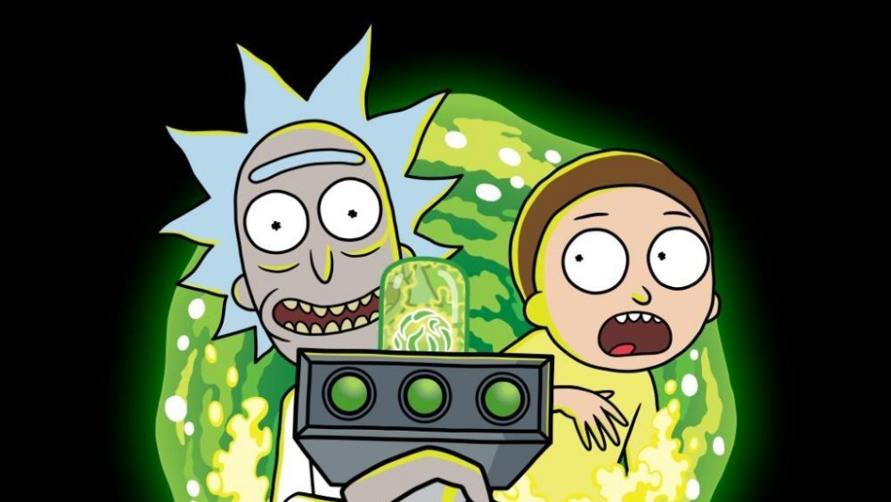

<body>
    

    <main>
        <div class="description-character">
                <p> Rick es retratado como un científico loco; utilizando su destreza matemática y científica junto con apatía y cinismo egoísta, emerge a salvo de cualquier situación, sin importar las consecuencias de su autopreservación.</p>
                <p> Morty es tranquilo y calmado pero muy manipulable, en la escuela no le va del todo bien pués tiene dificultades en ella, principalmente porque no tiene tiempo para estudiar debido a las aventuras que tiene en compañía de su abuelo Rick.</p>
                <p>La hermana mayor de 17 años de Morty, una adolescente más convencional y a menudo superficial, está obsesionada con cualquier cosa que pueda mejorar su estatus con sus compañeros. Summer es muy similar a su madre, ya que a menudo se muestra muy inteligente y humorística, pero es mucho más desinteresada.</p>
                <p>Beth Smith la hija de Rick, la madre de Morty y Summer, y la esposa de Jerry. Ella es cirujana de caballos. Nivelada y asertiva, luchaba con el ego de su marido, que prospera desafiando su demostrada mediocridad.</p>
                <p> Jerry Smith Tiene tez blanca con cabeza ovalada, pelo castaño claro y su oreja saliendo justo a la mitad de la cabeza con 2 ojos redondos y grandes con una pupila pequeña. Utiliza una camisa verde con unas franjas marrones en la mitad con un pantalón marrón claro.</p>
                <p>Abadango Cluster Princess tiene una personalidad fría, calculadora, seria, antipática y es muy orgulloso. Tiene un destacado don para las artes . Es ambicioso y desea obtener mucho poder </p>
                <p>Abradolf Lincler es un gigantesco meta-humanoide robótico. Él es una combinación entre Abraham Lincoln y Adolf Hitler. Fue creado cuando Rick combinó el ADN de Abraham Lincoln y Adolf Hitler , en un intento de crear un súper líder moralmente neutral.</p>
                <p>Adjudicator Rick es extremadamente arrogante, orgulloso y trabajador; constantemente se refiere a su herencia y estatus real a lo largo de la serie. </p>
                <p>Agency Director este peligroso luchador por la libertad encarcelado por una agencia rusa se convirtió en la peor pesadilla de Pickle Rick cuando se ofreció a asesinar al "pepinillo" a cambio de la liberación de su hija</p>
                <p>Alan Rails es un hombre negro grande y musculoso que lleva un casquillo de conductor de tren anticuado con monos de trabajo, guantes y un capote sucio y sin mangas.</p>
                <p>Albert Einstein fue un científico que inventó la teoría de la relatividad. Apareció en el episodio de Rick and Morty A Rickle in Time y está basado en el científico de la vida real del mismo nombre.</p>
                <p>Alexander es un humanoide resultante de un experimento de Rick que produjo esta amalgama de Adolf Hitler y Abraham Lincoln, al más puro estilo monstruo de Frankenstein.</p>
                <p>Alien Googah esta chuchería andante, que a primera vista parece bondadoso y cariñoso con los niños, resulta ser un agresivo pederasta que intenta asaltar a Morty.</p>
                <p>Morty es tranquilo y calmado pero muy manipulable, en la escuela no le va del todo bien pués tiene dificultades en ella, principalmente porque no tiene tiempo para estudiar debido a las aventuras que tiene en compañía de su abuelo Rick.</p>
                <p>Es un viejo científico que acostumbra a hablar de manera vulgar y entre eructos, y la mayoría de las veces tiene un rastro de saliva en la boca. Es padre de Beth Sánchez y es el abuelo materno de Summer y Morty. Es un hombre que ha pasado gran parte de su vida viajando a través de diversas galaxias. Para él, la Tierra se llama Planeta Tierra del Universo C-137.</p>
                <p>Amish Cyborg Un personaje tonto y sin sentido. En su caso, convertir a un hombre amish en un cyborg, cuando los amish son una comunidad conocida por rechazar las comodidades de la tecnología moderna, es esencialmente un oxímoron en sí mismo.</p>
                <p> Annie Un empleado de Anatomy Park que trabaja en un stand de churro. Ella y Morty son los únicos supervivientes del brote de la enfermedad en el parque. Inicialmente ignora a Morty, pero se ve más tarde haciéndose con él mientras los dos ven una película. Al final del episodio, Rick la encoge para dirigir la construcción de un nuevo Parque Anatomía después de que ella le dice que ella estudió todas las notas del Dr. Bloom.</p>
                <p>Antenna Morty vuela, tiene súper fuerza, habla y entiende a las ardillas.  Es la única con la dulzura propia de su edad. Es sensible, infantil, tierna, cariñosa y emocional.</p>
                <p>Antenna Rick es un fanático de la película Titanic, colecciona monedas antiguas y es bastante divertido sin pretenderlo debido a su ignorancia de lo que sucede a su alrededor. Pero es la definición exacta del perdedor.</p>
                <p>Ants in my Eyes Johnson no puede ver ni sentir nada. Su comercial termina con él incendiándose en su tienda, pero nadie lo ayuda. Su destino es actualmente desconocido.
                Su tienda vende televisores, microondas y radios, entre otras cosas, como se anuncia en su comercial. Sin embargo, no puede decir cuáles son la mayoría de los artículos.
                Sin que él lo sepa, la mayoría de los objetos que vende son gratuitos.
                Hormigas en mis ojos Johnson sufre de una condición neurológica que no le permite ver ni sentir.</p>
        </div>
    </main>
</body>